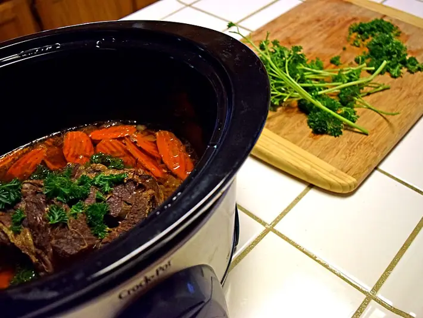

Фото: Mark Miller, CC BY-SA 4.0

Жаркое со свининой в горшочках
Свинина с картошкой и овощами, томлённые в горшочках в духовке
100 мин5 порц.533 ккал на порциюБ 24 · Ж 33 · У 36Русская кухня
Продукты на 5 порц.
- Свинина600 г
- Картофель7 шт
- Лук репчатый2 шт
- Морковь2 шт
- Чеснок2 зуб.
- Вода2 стак.
- Растительное масло2 ст. л.
- Соль2 ч. л.
- Перец чёрный молотый2 щеп.
- Лавровый лист5 шт
- Укроп по желанию0,5 пучок
Как готовить
- Свинину нарежьте кусочками 2-3 см, картошку - крупными кубиками, лук - полукольцами, морковь - кружками.
- Обжарьте свинину на масле на сильном огне 7 минут до румяной корочки. Добавьте лук и морковь, жарьте ещё 5 минут.
- Разложите мясо с овощами по горшочкам, сверху картошку и чеснок. В каждый горшочек положите лавровый лист.
- Посолите, поперчите и залейте горячей водой примерно до половины высоты.
- Накройте крышками и поставьте в холодную духовку. Включите 180 °C (средний жар) и запекайте 60 минут.
- Картошка должна легко прокалываться ножом. Посыпьте укропом и подавайте прямо в горшочках.
Совет. Керамические горшочки ставят только в холодную духовку, иначе они могут треснуть от перепада температур. Можно готовить в одной утятнице, время то же.